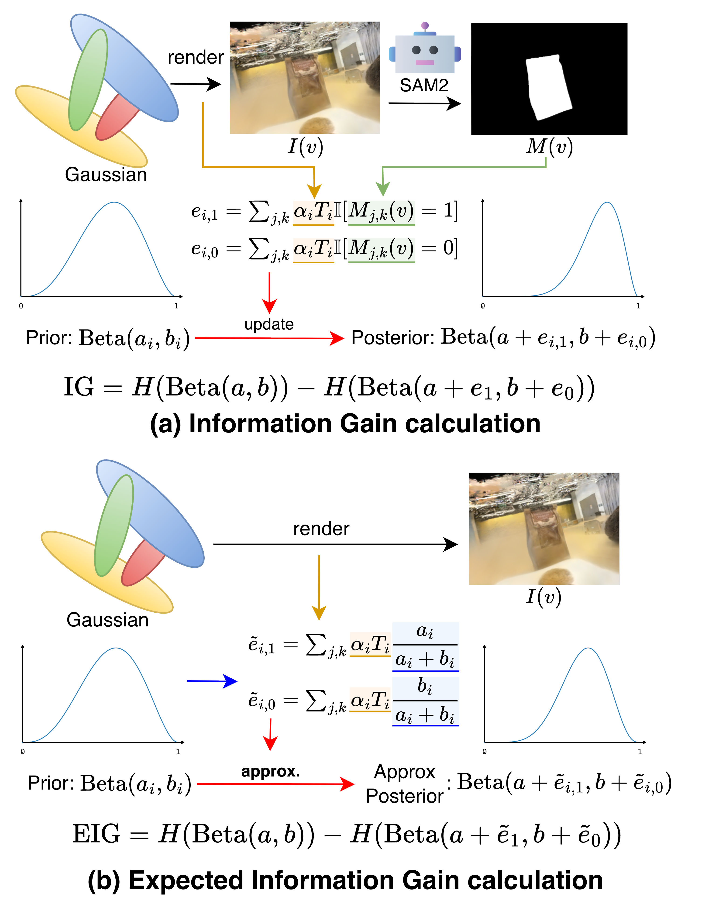

Overview of the camera-free pipeline: sample candidate views, score EIG, select the best, infer masks, and update Beta posteriors.
Bayesian Reformulation
Each Gaussian $g_i$ has a latent label $y_i \in \\{0,1\\}$, with a Beta prior over the
foreground probability $p_i$:
$$p_i \sim \mathrm{Beta}(a_i, b_i), \quad y_i \sim \mathrm{Bernoulli}(p_i)$$
Given a view $v$ and mask $M(v)$, per-Gaussian evidence is the sum of visibility-weighted
responsibilities inside or outside the mask:
$$e_{i,1}(v) = \sum_{(j,k) \in I(v)} \alpha_i T_i \mathbb{I}[M_{j,k}(v)=1], \; e_{i,0}(v)=\sum_{(j,k) \in I(v)} \alpha_i T_i \mathbb{I}[M_{j,k}(v)=0]$$
By conjugacy, the posterior update is closed-form:
$$\mathrm{Beta}(a_i,b_i) \rightarrow \mathrm{Beta}(a_i + e_{i,1}(v),\; b_i + e_{i,0}(v))$$
Analytic EIG + Greedy Guarantee
To avoid running SAM2 on all candidates, we approximate counts using the current mean
$m_i = a_i/(a_i+b_i)$ and compute Expected Information Gain:
$$\mathrm{EIG}(v)= \sum_i \Big[ H(\mathrm{Beta}(a_i,b_i)) - H(\mathrm{Beta}(a_i+\tilde e_{i,1}(v),\; b_i+\tilde e_{i,0}(v))) \Big]$$
We select the next view greedily:
$$v^* = \arg\max_v \mathrm{EIG}(v)$$
EIG is adaptive monotone and submodular, giving a greedy
$(1 - 1/e)$ approximation to the optimal view-selection policy.

Information gain visualization used to score candidate views without running SAM2.